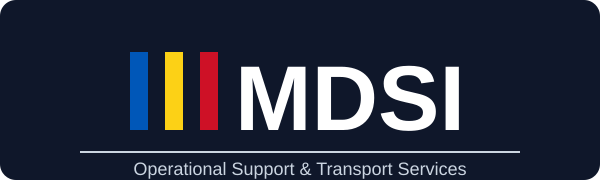

Suport practic pentru operațiuni de transport și logistică la nivel european
MDSI Operations SRL sprijină companiile de transport și logistică prin capacitate operațională practică, management interimar și suport pentru continuitate. Accentul este pus pe execuție zilnică stabilă, coordonare clară și urmărire disciplinată.
Suport practic pentru operațiunile zilnice de transport, disciplină în planificare, urmărire operațională și coordonare între dispecerat, șoferi, flotă și administrație.
Exemple: verificarea planificării, coordonare dispecerat, raportare operațională, urmărire KPI și escaladarea problemelor.
Beneficiu: control mai clar al operațiunilor zilnice și execuție operațională mai consecventă.
Suport temporar de management operațional în perioade de absență, tranziție, creștere, reorganizare sau presiune operațională ridicată.
Exemple: coordonare interimară a echipei, suport pentru predare-preluare, stabilizare operațională și continuitate în lipsa managementului curent.
Beneficiu: reducerea întreruperilor în timp ce activitatea de transport rămâne funcțională.
Asistență pentru continuitate operațională atunci când echipele de transport trec prin schimbări de volum, procese, echipă sau întreruperi neprevăzute.
Exemple: planificarea continuității, stabilirea priorităților, organizarea volumului de lucru și întărire operațională pe termen scurt.
Beneficiu: mai puține întreruperi și reziliență mai bună în perioade operaționale sensibile.
Suport de coordonare pentru șoferi, disponibilitatea flotei, comunicare operațională și urmărirea execuției zilnice de transport.
Exemple: comunicare cu șoferii, urmărirea programelor, verificări ale statusului flotei, urmărirea incidentelor și feedback operațional.
Beneficiu: comunicare mai bună, urmărire mai rapidă și vizibilitate crescută asupra activității flotei.
Analiza și îmbunătățirea proceselor practice de transport, a raportării, a fluxurilor administrative și a rutinelor operaționale.
Exemple: maparea fluxurilor, simplificarea proceselor, îmbunătățirea predărilor, modele de raportare și rutine operaționale standard.
Beneficiu: operațiuni mai disciplinate, cu mai puține întârzieri, goluri sau probleme repetate.
Asistență la distanță pentru coordonare transport, urmărire operațională, raportare și suport administrativ atunci când prezența la fața locului nu este necesară.
Exemple: suport la distanță pentru planificare, verificări zilnice, urmărirea documentelor, monitorizare performanță și apeluri de coordonare operațională.
Beneficiu: capacitate de suport flexibilă, fără structură fixă inutilă.
Suport administrativ și HR operațional legat de echipe de transport, șoferi, documente, programe și coordonare internă.
Exemple: coordonare onboarding, urmărire documente, suport pentru planificarea absențelor, verificări dosare șoferi și comunicare administrativă.
Beneficiu: organizare mai bună în jurul oamenilor și documentelor care mențin operațiunile de transport în mișcare.
MDSI Operations SRL
Cu sediul în România • Activitate la nivel european
LinkedIn Company Page